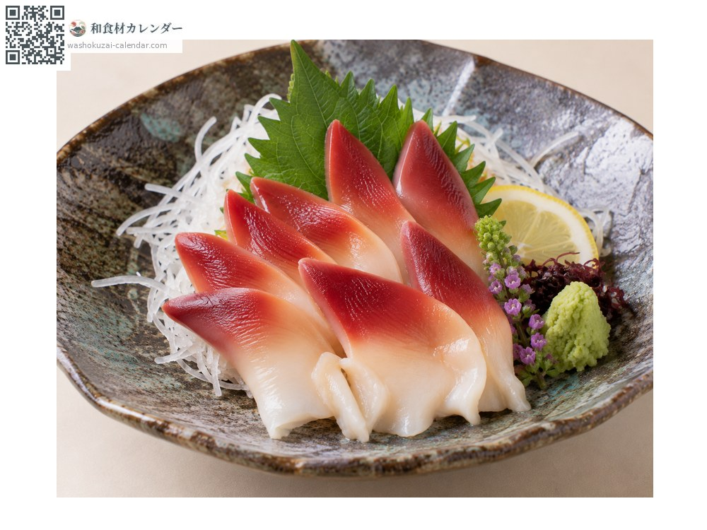
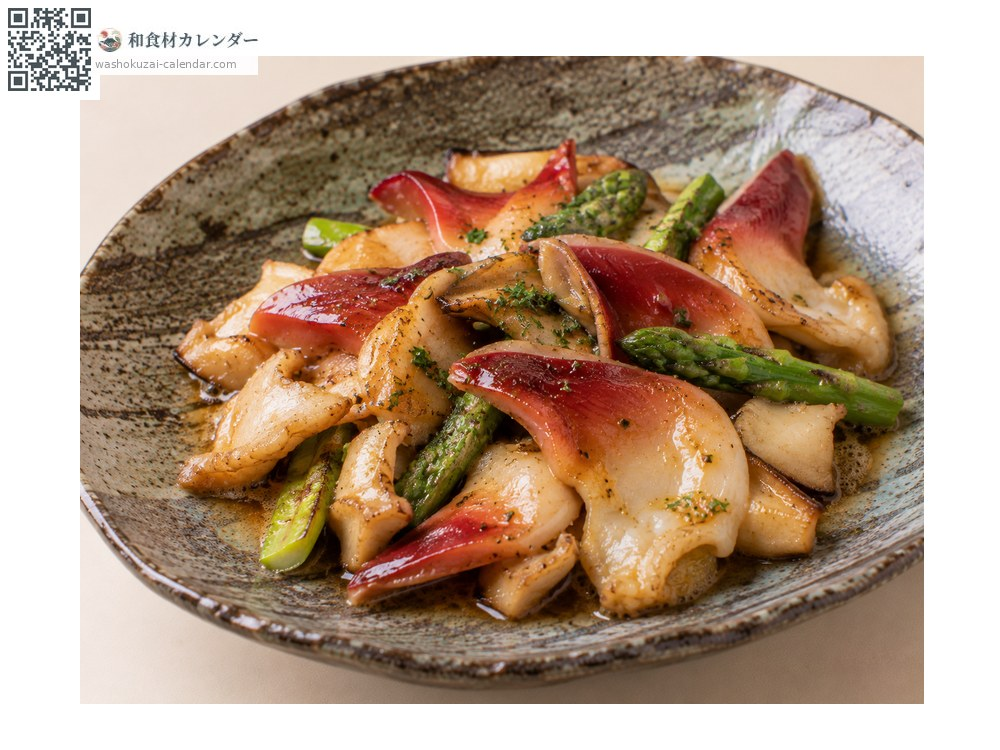
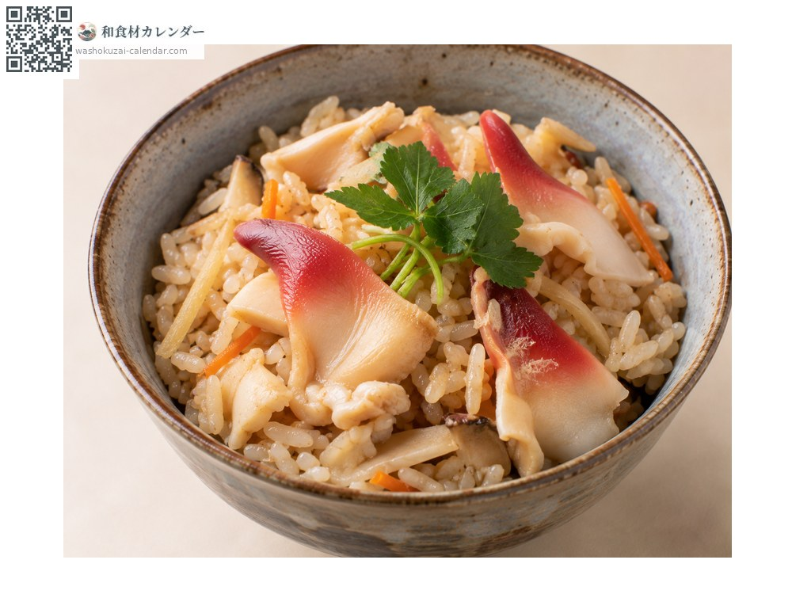
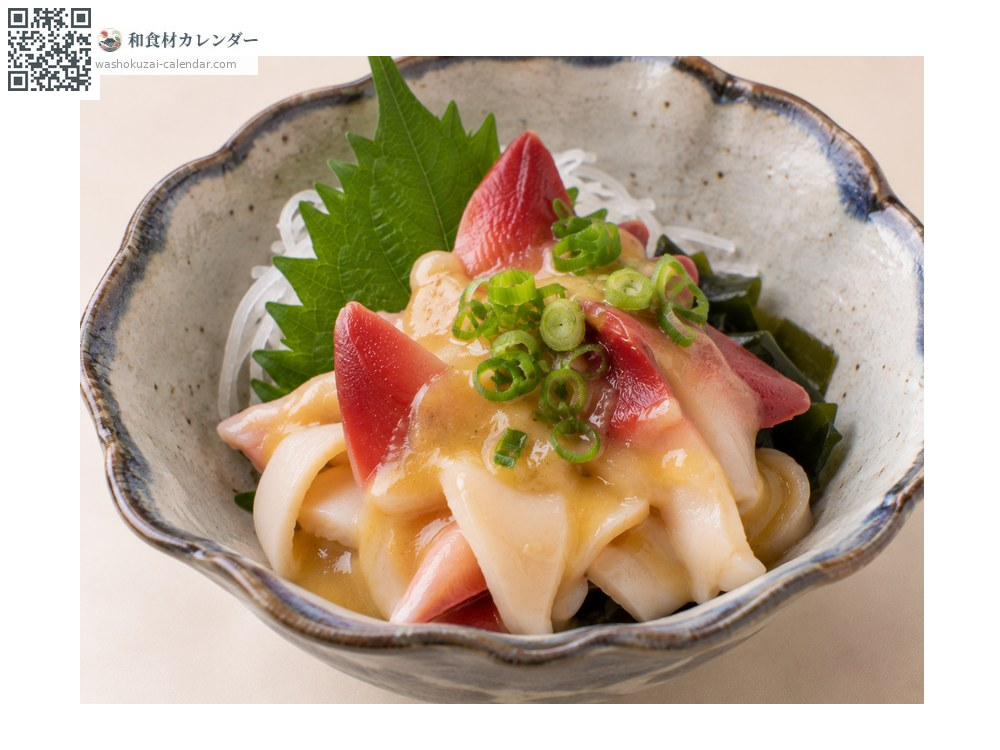

อาหารทะเล
หอยฮกกิ (หอยตลับซาฮาลิน)
ホッキ貝 ほっきがい
อร่อยที่สุดในเดือน ม.ค., ก.พ., มี.ค., ธ.ค.

ช่วงที่อร่อยที่สุด
ม.ค.
ก.พ.
มี.ค.
เม.ย.
พ.ค.
มิ.ย.
ก.ค.
ส.ค.
ก.ย.
ต.ค.
พ.ย.
ธ.ค.
ช่วงอร่อยที่สุดมีจำหน่าย
วิธีปรุง

ซาชิมิ
ลวกน้ำร้อนเร็ว ๆ จะเปลี่ยนเป็นสีแดงสด รสหวานจัด

ผัดเนย
ผัดเร็ว ๆ ถ้าสุกเกินไปจะเหนียว

ข้าวหุงหอย
เป็นของขึ้นชื่อของโทมาโกไม น้ำหอยจะซึมเข้าข้าว

นูตะ (คลุกมิโซะน้ำส้ม)
คลุกมิโซะน้ำส้ม ความหวานของหอยจะเด่นขึ้น
วิธีเลือก
เปลือกหนา ยกแล้วรู้สึกหนัก สัมผัสแล้วมีปฏิกิริยา
วิธีเก็บรักษา
ทั้งเปลือกแช่เย็นได้ 2-3 วัน เนื้อที่แกะแล้วควรลวกก่อนแล้วกินวันเดียวกัน
แหล่งผลิตหลัก
เกร็ดน่ารู้
ชื่อทางการคืออุบางาอิ เมืองโทมาโกไม ฮอกไกโด มีชื่อเสียงและกำหนดให้เป็นหอยประจำเมือง สดจะออกขาว แต่พอลวกจะเปลี่ยนเป็นสีแดงสด
วัตถุดิบที่อร่อยที่สุดในช่วงเดียวกัน
 ปลาเฮอร์ริงแปซิฟิก
ปลาเฮอร์ริงแปซิฟิก ปลาเข็ม (ซาโยริ)
ปลาเข็ม (ซาโยริ) ปลาน้ำแข็ง (ชิราอุโอะ)
ปลาน้ำแข็ง (ชิราอุโอะ) ปลาซาบะ
ปลาซาบะ ปลาบุริ (ปลาหางเหลือง)
ปลาบุริ (ปลาหางเหลือง) ปลาทูน่าครีบน้ำเงิน
ปลาทูน่าครีบน้ำเงิน ปลากระโทง
ปลากระโทง ปลาไท (ปลากะพงแดงญี่ปุ่น)
ปลาไท (ปลากะพงแดงญี่ปุ่น)